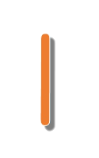
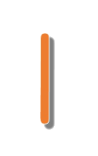

「大湖公園」位於台北市內湖盆地東側，以水鳥景觀著名，面對五指山、忠勇山。
公園因電視劇取景曝光率高，可見其山光水色搏得眾愛，原為幽靜的湖泊。
錦帶拱橋，紅白相間，高聳於湖面已成公園著名的地景，
造型獨特的九曲橋，銜接亭台樓閣，憑欄眺望湖面風光，風光明媚，幾疑是天上人間的如真似幻！
因野鴨、白鷺鷥常在此棲息故稱白鷺湖，
後因大興土木破壞原來寧靜、隱密的氣氛。附近有東義觀光果園，白鷺山位於大湖旁，俯瞰內湖風光。
【大眾運輸】
1、捷運：搭乘台北捷運文湖線至「大湖公園站」即可抵達。
2、公車：搭乘公車2、247、284、617、620、630至「大湖站」即可抵達。


 
